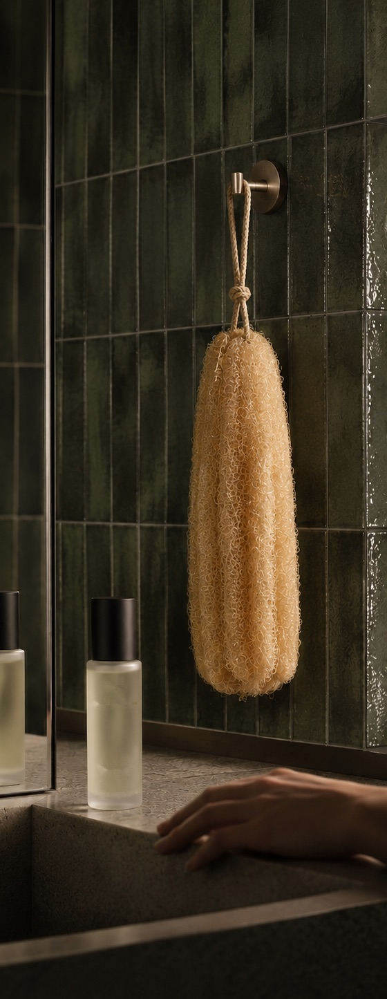

Grown,not made.
A loofah from Damanhour and a bar of laurel soap, renewed every 60 days so your ritual never goes stale.
Shop the Duo · AED 85Grown in the Nile Delta
Every loofah carries a batch QR: its field, harvest month and grade, traced to Field 7.
Renewed every 60 days
A cotton tag fades by day 60. A fresh loofah ships before yours is past its best.
Nothing plastic
Compost the loofah and keep the box: it folds into a shower caddy. Cotton, kraft and twine.

Renew every60 daysDiscover ${A}
 Gift setsDiscover ${A}
Gift setsDiscover ${A}
Bring the honesty of the hammam
back to the everyday shower.
Real materials from real farms. A loofah sun-dried for 21 days, a soap cured slowly with laurel oil, and a quiet reminder when it is time for fresh ones.
Most loved
We begin
with the field.
Our gourds ripen on trellises above the Nile Delta, then dry for 21 days in the sun. Never bleached: the colour is the sun’s. Every batch is graded before it is cut.
Wet. Lather.
Circle. Hang to dry.
- 01 · WetSoak the loofah under warm water for 30 seconds. It softens as it drinks.
- 02 · LatherWork the Sabon Ghar into the fibre, not onto your skin.
- 03 · CircleSmall circles for two minutes, one area at a time.
- 04 · HangHang it by the cotton tag, out of the spray. Dry fibre lasts longer.
When the tag fades,
so should your loofah.
Every loofah wears a cotton tag printed in fading ink. By day 60 it is gone, and your next one is already on its way.
- Day 0Your set arrives: loofah, soap, a box that becomes a caddy, and the ritual card.
- Day 50One WhatsApp: “Your tag is fading. A fresh one ships Wednesday.” Skip, swap or keep.
- Day 60A fresh loofah and soap arrive. No new box, nothing wasted.
On their own
Two-Minute Hammam